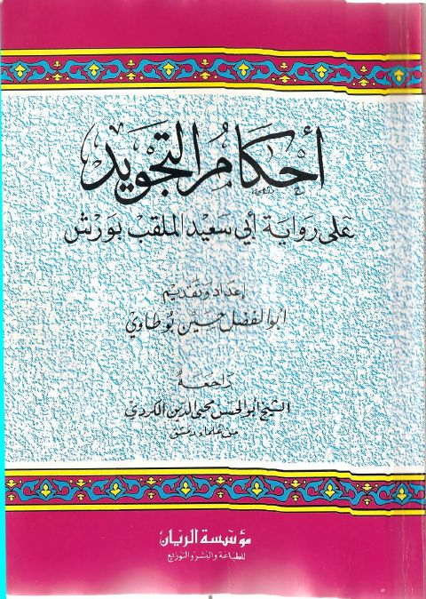

Downloads need an internet connection.
أحكام التجويد على رواية أبي سعيد الملقب بورش
Authors: أبو الفضل حسين بوطاوي
Editors: أبو الحسن محيي الدين الكردي
Publishers: مؤسسة الريان
**▫️ العنوان: أحكام التجويد على رواية أبي سعيد الملقب بورش** ▪️ المؤلف: #أبو_الفضل_حسين_بوطاوي ▫️ المحقق: #أبو_الحسن_محيي_الدين_الكردي ▪️ الناشر: #مؤسسة_الريان ▫️ تاريخ النشر: 1998م 1419هـ ▪️ بلد النشر: بيروت، #لبنان ▫️ الطبعة: 2 ▪️ عدد الأجزاء: 1 ▫️ الصفحات: 81 ▪️ نوع الوعاء: #كتب ▫️ التصنيف الرئيسي: #التفسير_وعلوم_القرآن ▪️ التصنيف الفرعي: #القراءات ۪